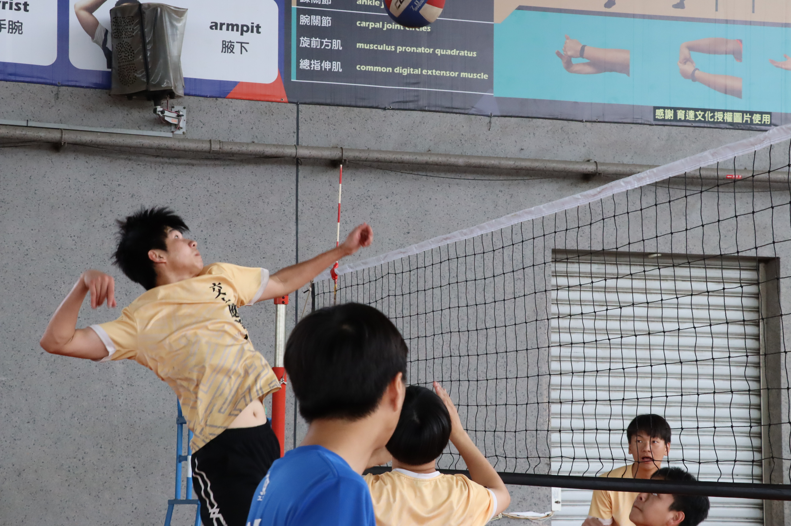

我是誰
#兔子愛好者 #ENTJ #排球癡 #唱歌
#數學不太好 #臺中人 #鄉下人
嗨，歡迎來到我的個人簡介
希望接下來的內容能讓你更了解我！

主頁
網站導覽
聯絡資訊
#兔子愛好者 #ENTJ #排球癡 #唱歌
#數學不太好 #臺中人 #鄉下人
嗨，歡迎來到我的個人簡介
希望接下來的內容能讓你更了解我！
自國中起，閒暇時我最喜歡做的事情就是去打排球。
大二時擔任應數系排球隊的副隊長，大三轉為隊長。

出生民國93年3月，長於台中市霧峰區。
國小國中Minecraft是大家口中炙熱的火球，我也為之著迷。
因為想要從根部成為真正的造物主，Java，成為我的Coding起跑線。
雖然那時大部分的程式碼是public class static void、sysytem.println()...
國中會考結束之後，Python紅透天，讓我意識到寫這個東西好像真的很賺錢，我開始跑到Youtube學習Python， 甚至我還記得那時的播放列表 ，以及授課老師回覆我的留言。
高中發現有能力競賽，參加並且使用Python得到佳作，進入培訓後老師讓我開始學習C/C++，一個很討厭的程式語言，什麼都要宣告清清楚楚。
然而我卻開始自己去Youtube找影片學習，並且到Online Judge上測試自己的能力。
大學的計概、轉系考，迫使我將Python與C++的能力提升到一個新的高度。